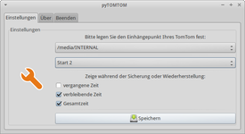
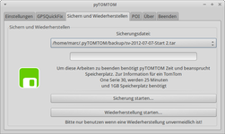

pyTOMTOM
Dieser Artikel wurde für die folgenden Ubuntu-Versionen getestet:
Ubuntu 16.04 Xenial Xerus
Ubuntu 14.04 Trusty Tahr
Zum Verständnis dieses Artikels sind folgende Seiten hilfreich:
TomTom N.V.  ist ein Hersteller von linuxbasierten Navigationssystemen. Trotz dieses Umstandes steht die Software TomTom HOME nicht für Linux zu Verfügung. Für die Datenverwaltung gibt es Alternativen - welche mit Einschränkungen - einsetzbar sind. So gibt es z.B. keine Möglichkeit Kartenupdates über diese Programme einzuspielen und den Service von TomTom zu nutzen. Hier ist man auf Windows angewiesen.
ist ein Hersteller von linuxbasierten Navigationssystemen. Trotz dieses Umstandes steht die Software TomTom HOME nicht für Linux zu Verfügung. Für die Datenverwaltung gibt es Alternativen - welche mit Einschränkungen - einsetzbar sind. So gibt es z.B. keine Möglichkeit Kartenupdates über diese Programme einzuspielen und den Service von TomTom zu nutzen. Hier ist man auf Windows angewiesen.
pyTOMTOM  ist eine Anwendung mit der grundlegende Basisfunktionen genutzt werden können. Es ist möglich die Daten des TomTom zu sichern, GPSQuickFix einzuspielen und komfortabel neue POI auf dem Navigationsassistenten zu verwalten. Bereits auf dem Gerät vorinstallierte Daten werden nicht erfaßt.
ist eine Anwendung mit der grundlegende Basisfunktionen genutzt werden können. Es ist möglich die Daten des TomTom zu sichern, GPSQuickFix einzuspielen und komfortabel neue POI auf dem Navigationsassistenten zu verwalten. Bereits auf dem Gerät vorinstallierte Daten werden nicht erfaßt.
|  |  |
| Grundkonfiguration | Datensicherung |
Installation¶
Archiv¶
Die aktuelle Version als Archiv  herunterladen und ins Homeverzeichnis entpacken [1] (z.B. ~/pytomtom). Das Programm kann über den Aufruf von
herunterladen und ins Homeverzeichnis entpacken [1] (z.B. ~/pytomtom). Das Programm kann über den Aufruf von pytomtom.sh im Installationsverzeichnis gestartet [2] werden. Auf Wunsch einen Menüeintrag [3] vornehmen.
Paket¶
Von der Projektseite das aktuelle .deb-Paket herunterladen und installieren [4].
Das Programm ist anschließend im Menü unter "Zubehör -> pyTOMTOM" zu finden.
Bedienung¶
Beim ersten Start findet die Grundkonfiguration statt. Hier aus der Liste der unterstützten Geräte das eigene Modell heraussuchen. Nach dem Neustart der Anwendung stehen weitere Menüpunkte zur Verfügung.
| pyTOMTOM | ||
| Icon | Reiter | Beschreibung |
| "Einstellungen" | Den Einhängepunkt des Navis festlegen. Außerdem Feineinstellungen für die Datensicherung. | |
| "GPSQuickFix" | Aktualisierung der letzen bekannten Position der Satelliten - somit werden diese bei der nächsten Verwendung schneller gefunden | |
| "Sichern und Wiederherstellen" | Sicherung- / Wiederherstellung der Systemdaten des Navis. Diese werden im Homeverzeichnis im versteckten Ordner .pyTOMTOM als .tar-Archiv gespeichert. | |
| "POI" | In der Datenbank werden Points of Interest verwaltet und aus dieser auf das Gerät übertragen oder von diesem gelöscht werden. | |
| "Über" | Link zur Projektseite und ein Updatecheck. | |
| "Beenden" | Aushängen des Navigationsassistenten und beenden des Programms. | |
Points of Interest¶
Auf Navigationsgeräten von TomTom sind bereits POIs (Orte von Interesse) vorinstalliert. Diese können nach belieben erweitert werden. Eine Datei, welche welche eine Liste von interessanten Orten enthält, endet auf die Erweiterung .ov2 (TomTom Overlay). Optional kann im Menü eine Bilddatei angezeigt werden.
uus.ov2 (POIs)
uus.bmp (optional / 22x22 Pixel)
Es gibt im Internet eine Reihe von Seiten, welche POIs zum Download anbieten. Hier ist man auch nicht auf die Daten für TomTom-Geräte festgelegt. Mit GPSBabel können Datenformate anderer Anbieter umgewandelt und für das TomTom nutzbar gemacht werden.

- Erstellt mit Inyoka
-
 2004 – 2017 ubuntuusers.de • Einige Rechte vorbehalten
2004 – 2017 ubuntuusers.de • Einige Rechte vorbehalten
Lizenz • Kontakt • Datenschutz • Impressum • Serverstatus -
Serverhousing gespendet von